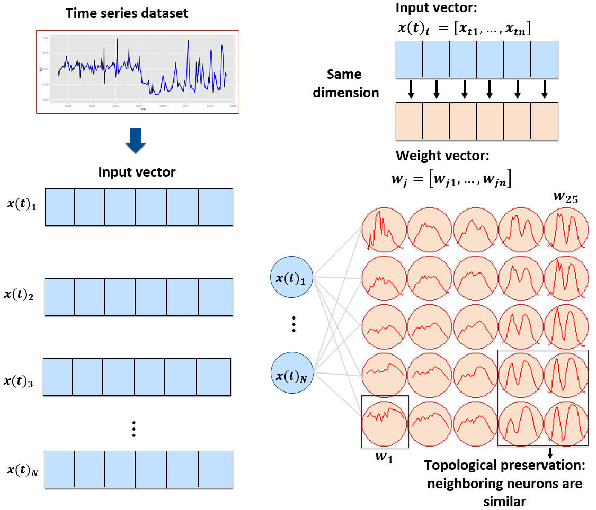
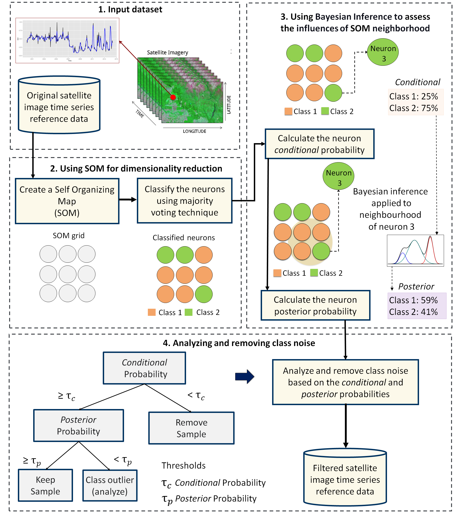
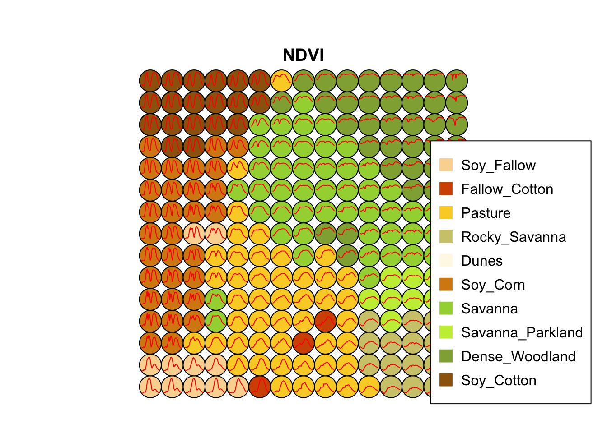
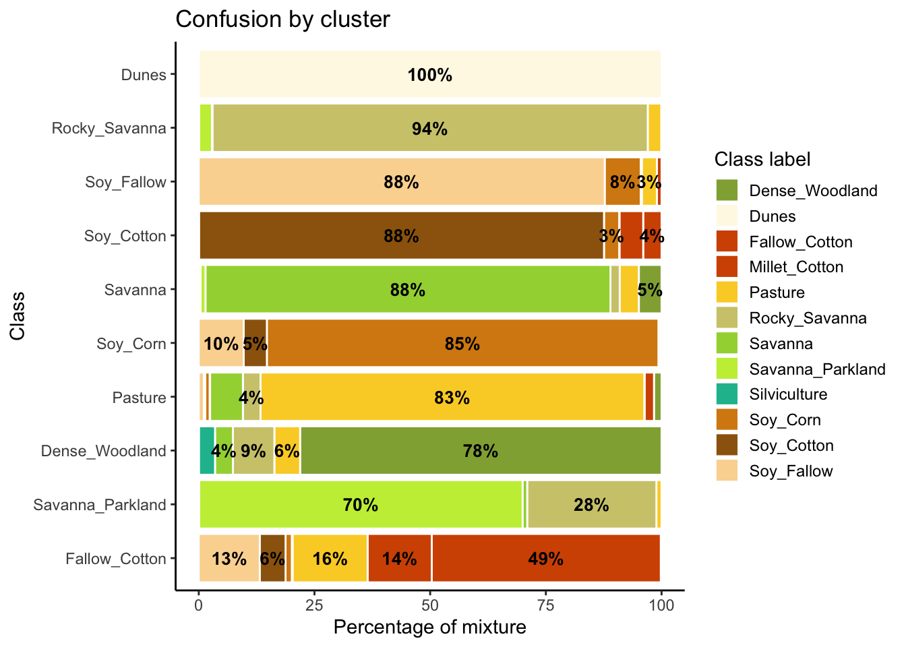
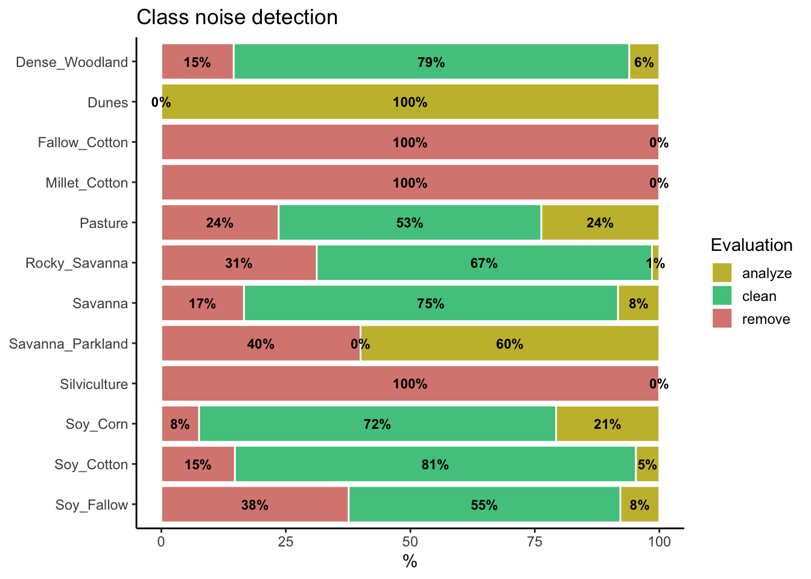
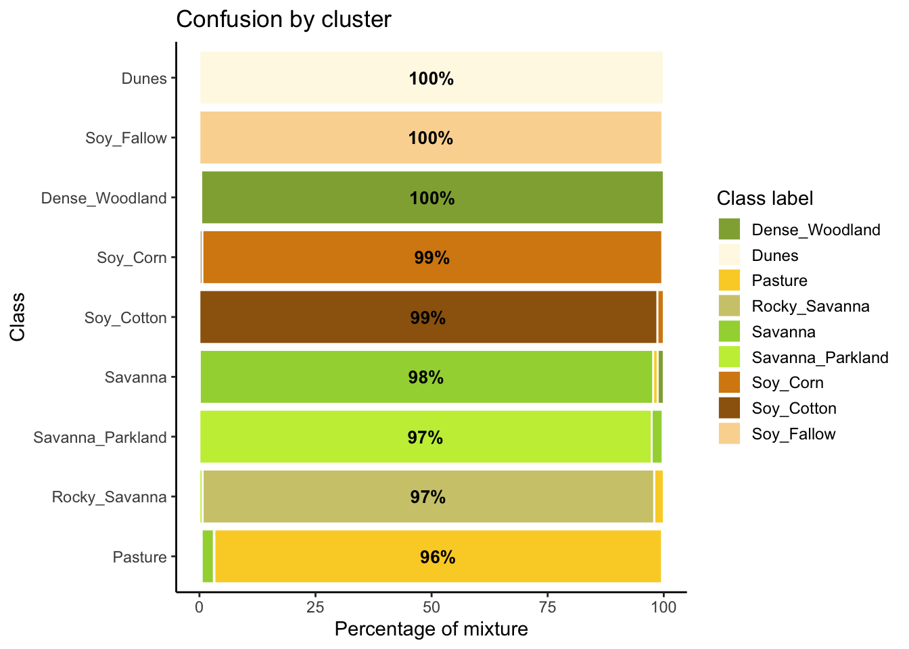

11 Self-organized maps for sample quality control
Configurations to run this chapter

11.1 Introduction
The sits package provides a clustering technique based on self-organizing maps (SOM) as an alternative to hierarchical clustering for quality control of training samples. SOM is a dimensionality reduction technique [1], where high-dimensional data is mapped into a two-dimensional map, keeping the topological relations between data patterns. As shown in Figure 11.1, the SOM 2D map is composed of units called neurons. Each neuron has a weight vector, with the same dimension as the training samples. At the start, neurons are assigned a small random value and then trained by competitive learning. The algorithm computes the distances of each member of the training set to all neurons and finds the neuron closest to the input, called the best matching unit.

The input data for quality assessment is a set of training samples, which are high-dimensional data; for example, a time series with 25 instances of 4 spectral bands has 100 dimensions. When projecting a high-dimensional dataset into a 2D SOM map, the units of the map (called neurons) compete for each sample. Each time series will be mapped to one of the neurons. Since the number of neurons is smaller than the number of classes, each neuron will be associated with many time series. The resulting 2D map will be a set of clusters. Given that SOM preserves the topological structure of neighborhoods in multiple dimensions, clusters that contain training samples with a given label will usually be neighbors in 2D space. The neighbors of each neuron of a SOM map provide information on intraclass and interclass variability, which is used to detect noisy samples. The methodology of using SOM for sample quality assessment is discussed in detail in the reference paper [2].

11.2 Dataset used in this chapter
The examples of this chapter use samples_cerrado_mod13q1, a set of time series from the Cerrado region of Brazil. The data ranges from 2000 to 2017 and includes 50,160 samples divided into 12 classes (Dense_Woodland, Dunes, Fallow_Cotton, Millet_Cotton, Pasture, Rocky_Savanna, Savanna, Savanna_Parkland, Silviculture, Soy_Corn, Soy_Cotton, and Soy_Fallow). Each time series covers 12 months (23 data points) from MOD13Q1 product, and has 4 bands (EVI, NDVI, MIR, and NIR). We use bands NDVI and EVI for faster processing.
# Take only the NDVI and EVI bands
samples_cerrado_mod13q1_2bands <- sits_select(
data = samples_cerrado_mod13q1,
bands = c("NDVI", "EVI"))
# Show the summary of the samples
summary(samples_cerrado_mod13q1_2bands)# A tibble: 12 × 3
label count prop
<chr> <int> <dbl>
1 Dense_Woodland 9966 0.199
2 Dunes 550 0.0110
3 Fallow_Cotton 630 0.0126
4 Millet_Cotton 316 0.00630
5 Pasture 7206 0.144
6 Rocky_Savanna 8005 0.160
7 Savanna 9172 0.183
8 Savanna_Parkland 2699 0.0538
9 Silviculture 423 0.00843
10 Soy_Corn 4971 0.0991
11 Soy_Cotton 4124 0.0822
12 Soy_Fallow 2098 0.0418 11.3 Creating the SOM map
To perform the SOM-based quality assessment, the first step is to run sits_som_map(), which uses the kohonen R package to compute a SOM grid [3], controlled by five parameters. The grid size is given by grid_xdim and grid_ydim. The starting learning rate is alpha, which decreases during the interactions. To measure the separation between samples, use distance (either “dtw” or “euclidean”). The number of iterations is set by rlen. When using sits_som_map() in machines which have multiprocessing support for the OpenMP protocol, setting the learning mode parameter mode to “patch” improves processing time. In Windows, please use “online”.
We suggest using the Dynamic Time Warping (“dtw”) metric as the distance measure. It is a technique used to measure the similarity between two temporal sequences that may vary in speed or timing [4]. The core idea of DTW is to find the optimal alignment between two sequences by allowing non-linear mapping of one sequence onto another. In time series analysis, DTW matches two series slightly out of sync. This property is useful in land use studies for matching time series of agricultural areas [5].
# Clustering time series using SOM
som_cluster <- sits_som_map(samples_cerrado_mod13q1_2bands,
grid_xdim = 15,
grid_ydim = 15,
alpha = 1.0,
distance = "dtw",
rlen = 20)# Plot the SOM map
plot(som_cluster)
The output of the sits_som_map() is a list with three elements: (a) data, the original set of time series with two additional columns for each time series: id_sample (the original id of each sample) and id_neuron (the id of the neuron to which it belongs); (b) labelled_neurons, a tibble with information on the neurons. For each neuron, it gives the prior and posterior probabilities of all labels which occur in the samples assigned to it; and (c) the SOM grid. To plot the SOM grid, use plot(). The neurons are labelled using majority voting.
The SOM grid shows that most classes are associated with neurons close to each other, although there are exceptions. Some Pasture neurons are far from the main cluster because the transition between open savanna and pasture areas is not always well defined and depends on climate and latitude. Also, the neurons associated with Soy_Fallow are dispersed in the map, indicating possible problems in distinguishing this class from the other agricultural classes. The SOM map can be used to remove outliers, as shown below.
11.4 Measuring confusion between labels using SOM
The second step in SOM-based quality assessment is understanding the confusion between labels. The function sits_som_evaluate_cluster() groups neurons by their majority label and produces a tibble. Neurons are grouped into clusters, and there will be as many clusters as there are labels. The results shows the percentage of samples of each label in each cluster. Ideally, all samples of each cluster would have the same label. In practice, cluster contain samples with different label. This information helps on measuring the confusion between samples.
# Produce a tibble with a summary of the mixed labels
som_eval <- sits_som_evaluate_cluster(som_cluster)
# Show the result
som_eval # A tibble: 66 × 4
id_cluster cluster class mixture_percentage
<int> <chr> <chr> <dbl>
1 1 Dense_Woodland Dense_Woodland 78.1
2 1 Dense_Woodland Pasture 5.56
3 1 Dense_Woodland Rocky_Savanna 8.95
4 1 Dense_Woodland Savanna 3.88
5 1 Dense_Woodland Silviculture 3.48
6 1 Dense_Woodland Soy_Corn 0.0249
7 2 Dunes Dunes 100
8 3 Fallow_Cotton Dense_Woodland 0.169
9 3 Fallow_Cotton Fallow_Cotton 49.5
10 3 Fallow_Cotton Millet_Cotton 13.9
# ℹ 56 more rowsMany labels are associated with clusters where there are some samples with a different label. Such confusion between labels arises because sample labeling is subjective and can be biased. In many cases, interpreters use high-resolution data to identify samples. However, the actual images to be classified are captured by satellites with lower resolution. In our case study, a MOD13Q1 image has pixels with 250 m resolution. As such, the correspondence between labeled locations in high-resolution images and mid to low-resolution images is not direct. The confusion by sample label can be visualized in a bar plot using plot(), as shown below. The bar plot shows some confusion between the labels associated with the natural vegetation typical of the Brazilian Cerrado (Savanna, Savanna_Parkland, Rocky_Savanna). This mixture is due to the large variability of the natural vegetation of the Cerrado biome, which makes it difficult to draw sharp boundaries between classes. Some confusion is also visible between the agricultural classes. The Fallow_Cotton class is a particularly difficult one since many of the samples assigned to this class are confused with Soy_Cotton and Millet_Cotton.
# Plot the confusion between clusters
plot(som_eval)
11.5 Detecting noisy samples using SOM
The third step in the quality assessment uses the discrete probability distribution associated with each neuron, which is included in the labeled_neurons tibble produced by sits_som_map(). This approach associates probabilities with frequency of occurrence. More homogeneous neurons (those with one label has high frequency) are assumed to be composed of good quality samples. Heterogeneous neurons (those with two or more classes with significant frequencies) are likely to contain noisy samples. The algorithm computes two values for each sample:
prior probability: the probability that the label assigned to the sample is correct, considering the frequency of samples in the same neuron. For example, if a neuron has 20 samples, of which 15 are labeled as
Pastureand 5 asForest, all samples labeled Forest are assigned a prior probability of 25%. This indicates that Forest samples in this neuron may not be of good quality.posterior probability: the probability that the label assigned to the sample is correct, considering the neighboring neurons. Take the case of the above-mentioned neuron whose samples labeled
Pasturehave a prior probability of 75%. What happens if all the neighboring neurons haveForestas a majority label? To answer this question, we use Bayesian inference to estimate if these samples are noisy based on the surrounding neurons [2].
To identify noisy samples, we take the result of the sits_som_map() function as the first argument to the function sits_som_clean_samples(). This function finds out which samples are noisy, which are clean, and which need to be further examined by the user. It requires the prior_threshold and posterior_threshold parameters according to the following rules:
- If the prior probability of a sample is less than
prior_threshold, the sample is assumed to be noisy and tagged as “remove”; - If the prior probability is greater or equal to
prior_thresholdand the posterior probability calculated by Bayesian inference is greater or equal toposterior_threshold, the sample is assumed not to be noisy and thus is tagged as “clean”; - If the prior probability is greater or equal to
prior_thresholdand the posterior probability is less thanposterior_threshold, we have a situation when the sample is part of the majority level of those assigned to its neuron, but its label is not consistent with most of its neighbors. This is an anomalous condition and is tagged as “analyze”. Users are encouraged to inspect such samples to find out whether they are in fact noisy or not.
The default value for both prior_threshold and posterior_threshold is 60%. The sits_som_clean_samples() has an additional parameter (keep), which indicates which samples should be kept in the set based on their prior and posterior probabilities. The default for keep is c("clean", "analyze"). As a result of the cleaning, about 900 samples have been considered to be noisy and thus to be possibly removed. We first show the complete distribution of the samples and later remove the noisy ones.
all_samples <- sits_som_clean_samples(
som_map = som_cluster,
prior_threshold = 0.6,
posterior_threshold = 0.6,
keep = c("clean", "analyze", "remove"))
# Print the sample distribution based on evaluation
plot(all_samples)
We now remove the noisy samples to improve the quality of the training set.
new_samples <- sits_som_clean_samples(
som_map = som_cluster,
prior_threshold = 0.6,
posterior_threshold = 0.6,
keep = c("clean", "analyze"))
# Print the new sample distribution
summary(new_samples)# A tibble: 9 × 3
label count prop
<chr> <int> <dbl>
1 Dense_Woodland 8519 0.220
2 Dunes 550 0.0142
3 Pasture 5509 0.142
4 Rocky_Savanna 5508 0.142
5 Savanna 7651 0.197
6 Savanna_Parkland 1619 0.0418
7 Soy_Corn 4595 0.119
8 Soy_Cotton 3515 0.0907
9 Soy_Fallow 1309 0.0338All samples of the classes which had the highest confusion with others(Fallow_Cotton, Silviculture, and Millet_Cotton) are marken as noisy been removed. Classes Fallow_Cotton and Millet_Cotton are not distinguishable from other crops. Samples of class Silviculture (planted forests) have removed since they have been confused with natural forests and woodlands in the SOM map. Further analysis includes calculating the SOM map and confusion matrix for the new set, as shown in the following example.
# Produce a new SOM map with the cleaned samples
new_cluster <- sits_som_map(
data = new_samples,
grid_xdim = 15,
grid_ydim = 15,
alpha = 1.0,
rlen = 20,
distance = "dtw")# Evaluate the mixture in the new SOM clusters
new_cluster_mixture <- sits_som_evaluate_cluster(new_cluster)
# Plot the mixture information.
plot(new_cluster_mixture)
As expected, the new confusion map shows a significant improvement over the previous one. This result should be interpreted carefully since it may be due to different effects. The most direct interpretation is that Millet_Cotton and Silviculture cannot be easily separated from the other classes, given the current attributes (a time series of NDVI and EVI indices from MODIS images). In such situations, users should consider improving the number of samples from the less represented classes, including more MODIS bands, or working with higher resolution satellites. The results of the SOM method should be interpreted based on the users’ understanding of the ecosystems and agricultural practices of the study region.
The SOM-based analysis discards samples that can be confused with samples of other classes. After removing noisy samples or uncertain classes, the dataset obtains a better validation score since there is less confusion between classes. Users should analyse the results with care. Not all discarded samples are low-quality ones. Confusion between samples of different classes can result from inconsistent labeling or from the lack of capacity of satellite data to distinguish between chosen classes. When many samples are discarded, as in the current example, revising the whole classification schema is advisable. The aim of selecting training data should always be to match the reality on the ground to the power of remote sensing data to identify differences. No analysis procedure can replace actual user experience and knowledge of the study region.
11.6 Summary
In this chapter, we discuss the use of SOM as a proven clustering method for removing noisy samples and those that cannot be easily distinguishable from other samples of other classes. Experience with sits indicates that using SOM is a good way to assess data quality. In the next section, we focus on a complementary method of removing sample imbalance.